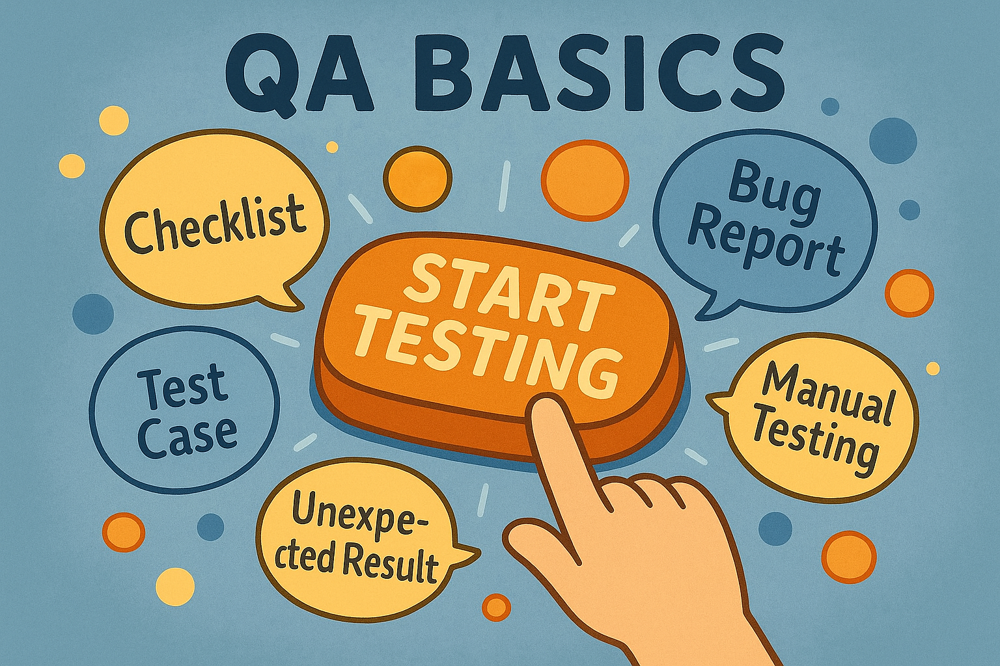
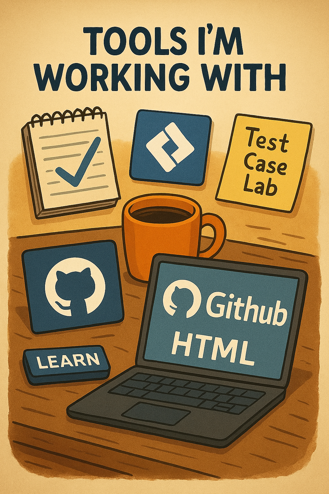
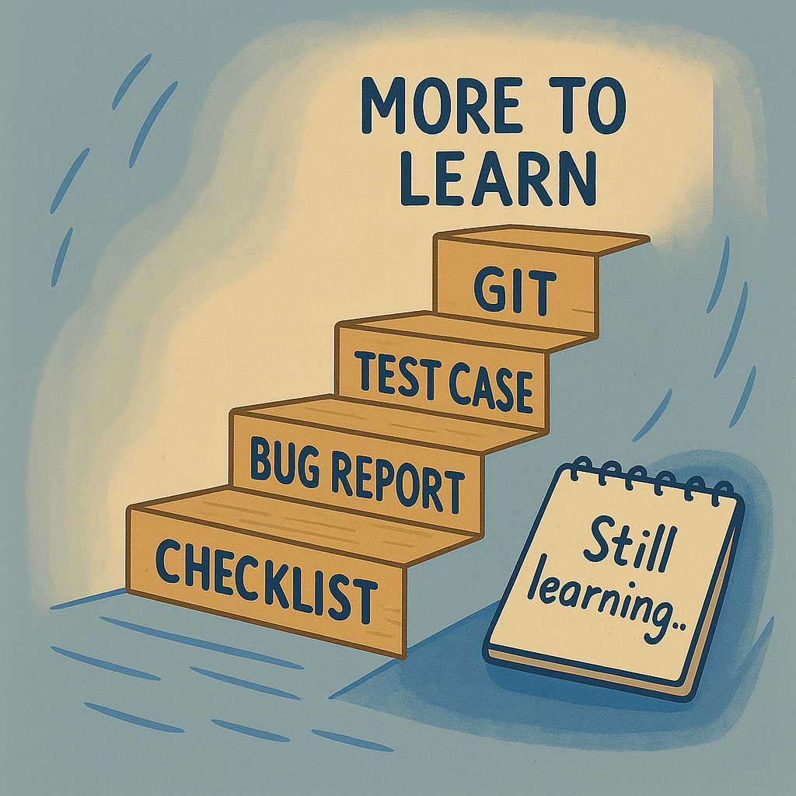

I don't need to rush to know everything from the start. I just need to keep going.
One click at a time. One bug at a time. One small “oh… now I get it” at a time.
And everything that felt confusing at the beginning. With time, it all starts to make sense.